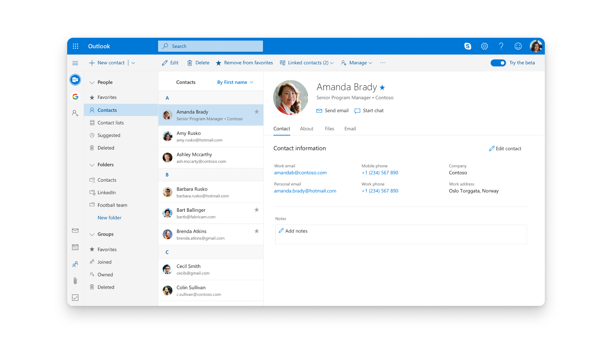

Overview
I got the opportunity to work on growth projects in Outlook, reimagining how people and groups are surfaced across communication flows. I drove the design and implementation of People Search in Outlook and led the redesign of the People Hub with richer contact management capabilities. Outlook has a high bar for design quality in a complex, large‑scale product, used by millions of people every day, and it was rewarding to see my work shipped and used in production. The concepts and UX design is still used in the current version of Outlook.
This work extended beyond UX design, exploring how signals from communication and collaboration patterns can surface relevant expertise and relationships within an organization. The concepts and innovations resulted in several patents, including Filtering communications, Facilitating generation and utilization of group folders, and Identifying experts and areas of expertise in an organization.
See patents: https://patents.google.com/?inventor=Berit+HERSTAD
Design Work

